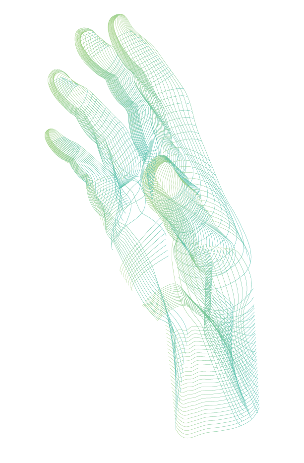
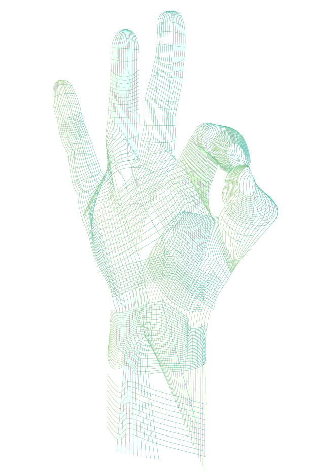
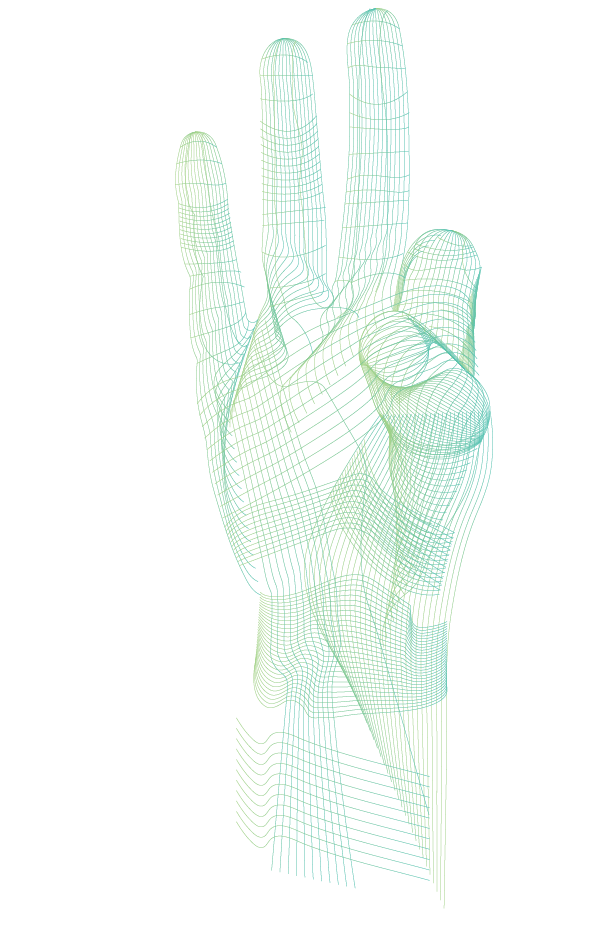
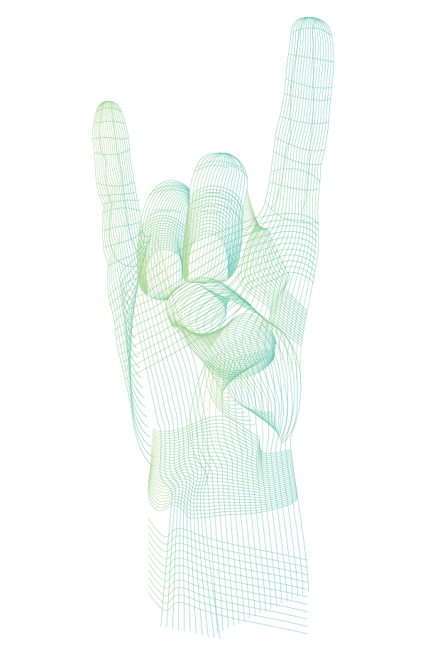

POSTHUMANISM BERLIN
CHALLENGE
Berlin being the inspiration, what does emotional intelligence look like in 2033?
Role
Being in a team of four, I was the concept strategist and interaction designer
TIMELINE
2018 AUG-DEC
Research—Design iterations—storytelling
Hey, how are you feeling?
Let's talk emotions
Our feelings are complex experiences that take place at any given second. They can sometimes be paradoxical, and bewildering to put into words. But in the future, we don’t have to. Imagine our emotions secured by the palm of our hands.
Enter AVA
Emotions are a naturally occurring phenomenon, yet AVA unfolds emotions beyond what the brain can generate.
Emotions are something that we naturally experience, yet AVA embraces emotions that are beyond brain generated.
Repair & Support
Emotions that accompany trauma such as fear, anxiety, and sadness can be immediately alleviated. You will instead be soothed by the feelings of relief and comfort because AVA allows you to be guided by the sentiments of another who has already walked the same emotional journey.
Superhuman
The subconscious and conscious mind builds a collection of emotional data as a reaction. The pressures that we are faced with often surfaces uncontrollable emotions that counteract it, such as nervousness, panic, and agitation. Liberate your constraints to oversee your emotions and perform at your finest.
Caring + Sharing
AVA’s database contains emotions and generates new emotions taken from the collective. We can use our collective minds and experiences to communicate and empathize with one another. It is a foundation of which we share our knowledge to generate creativity and visions.
Hands as control
We return interacting with technologies to our natural instinct. The user will use the right hand and fingers as commands
Activate AVA
The AVA system follows a progressive disclosure. A subtle fist gesture activates the system to search for curated emotions; initiative thinking confirms the activation.
Selecting emotions
Join a finger with the thumb, the emotion is revealed to experience the content tease. The emotions are immersed into the four fingers, corresponding to current emotional state, needs,and desires.
Confirm with an emotion
Place the thumb on the cuticles of the fingertip to confirm and experience the emotion. The gesture can be released after confirmation for the duration of the experience.
Merging emotions
Join two fingers with the thumb to feel two emotions combined. Merging two different emotions creates a brand new emotion. The new emotions allow the users to feel stimulated, elevated and posthuman.
Feeling posthuman
By the year 2033, AVA will be the guide for the global community to communicate and expand upon our collective experiences. AVA believes that emotions have the power to transcend current methods of communication to instill a sense of empowerment and empathy.